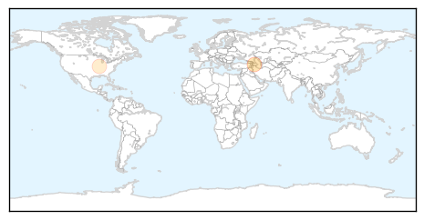
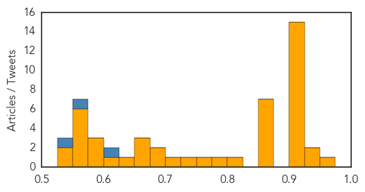

Hepatitis
30-Day Web Trend
1 alerts, 0 warnings

30-Day Twitter Trend
0 alerts, 0 warnings

Article Locations
Article Confidences

Top Articles:
Top Tweets:
-
No tweets found for Feb 05, 2015
Unknown
30-Day Web Trend
0 alerts, 0 warnings

30-Day Twitter Trend
5 alerts, 0 warnings

Article Locations

Article Confidences
Top Articles:
- 0.953
- Diphtheria case in Auckland
- 0.945
- 9 More Flu Deaths Reported In North Carolina
- 0.927
- Pittsburgh VA hospital closes unit due to stomach flu virus
- 0.917
- Chicago Tribune
- 0.917
- Chicago Tribune
- 0.917
- Chicago Tribune
- 0.917
- Chicago Tribune
- 0.917
- Chicago Tribune
- 0.917
- Chicago Tribune
- 0.917
- Chicago Tribune
- 0.917
- Chicago Tribune
- 0.917
- Chicago Tribune
- 0.917
- Chicago Tribune
- 0.917
- Chicago Tribune
- 0.917
- Chicago Tribune
- 0.917
- Chicago Tribune
- 0.917
- Chicago Tribune
- 0.917
- Chicago Tribune
- 0.866
- U.S.-led forces target Islamic State with 12 air strikes in Iraq, Syria
- 0.866
- Ukraine won't consider any peace plan undermining territorial integrity-PM
- 0.866
- Putin will likely discuss energy cooperation during Egypt visit
- 0.866
- Russia says giving lethal arms to Ukraine would be security threat
- 0.866
- Bomb explodes under car in Belfast; no injuries
- 0.866
- Heavy shelling in Syrian capital -witness, media
- 0.856
- Health : Cancer an urgent problem of public health...
- 0.809
- New case of norovirus reported at Opryland Hotel
- 0.782
- Spokane, North Idaho News & Weather KHQ.com
- 0.764
- Puerto Rico declares flu epidemic; 1 dead, 140 hospitalised
- 0.749
- Four child malnutrition deaths in northern Argentina; another 1.800 in danger — MercoPress
- 0.702
- University Hospital Limerick tops trolley list again
- 0.692
- 'Superbug' infects eight patients at Phila. hospital
- 0.691
- NCSU students sickened from potential norovirus outbreak
- 0.666
- Virologist hunts cryptic virus that may be responsible for a society-shattering disease in Central Africa
- 0.664
- This vitamin might protect kids from malaria
- 0.663
- Video: Jordanian pilot's hometown mourns his death
- 0.640
- Hunting the Source of a Secretive Sickness
- 0.601
- Hollande and Merkel head to Kiev, Moscow with peace plan
- 0.586
- French knife attack suspect says he ‘hates military, Jews’
- 0.581
- The Winter itch is What's Going Around
- 0.581
- Greek, German finance chiefs fail to reach deal on debt
- 0.575
- UN agency boosts aid for Malawi's flood victims, as Member States are briefed on situation
- 0.569
- Syria launches air strikes after 'Islam Army' targets Damascus
- 0.564
- Al-Jazeera journalist returns to Australia after jail in Egypt
- 0.564
- ‘Colonial wounds’ to blame for Paris attacks, artist says
- 0.555
- Burr, Hatch, Upton Unveil Obamacare Replacement Plan (US Senate Committee on Finance)
- 0.553
- MGH team identifies factors predicting infection risk in patients with serious burns
- 0.542
- ‘Dodo the Pimp’ takes centre stage at Strauss-Kahn trial
- 0.530
- Flu shots still available in Maryland, medical experts stress
Top Tweets:
- 0.620
- RT “@Reuters_Health: WHO still concerned about spread of Saudi MERS virus http://t.co/Eu43SG47l1”
- 0.616
- This is a bad flu season!
- 0.577
- Manchas de café por todo tu cuarto, ropa regada, mesa rota... Crónicas de una torpe en tu casa. @ReiserVerden
- 0.574
- .@WHO Emergency Committee says MERS isn't a global health emergency but situation & possibility of international spread is still a concern.
- 0.567
- Correr de manera extenuante se refiere a carrera rápida, jogging moderado es lo que yo hago. No habla de tu chocheteo, fíjate.
- 0.547
- No consigo saber quién eres a través de tu mejilla.
- 0.542
- RT: .@WHO Emergency Committee says MERS isn't a global health emergency but situation & possibility of international sprea…
- 0.520
- Si quieres mejor calidad de vida, deja de fumar, bebe mucha agua y haz ejercicio. No es discrimen, es ciencia.